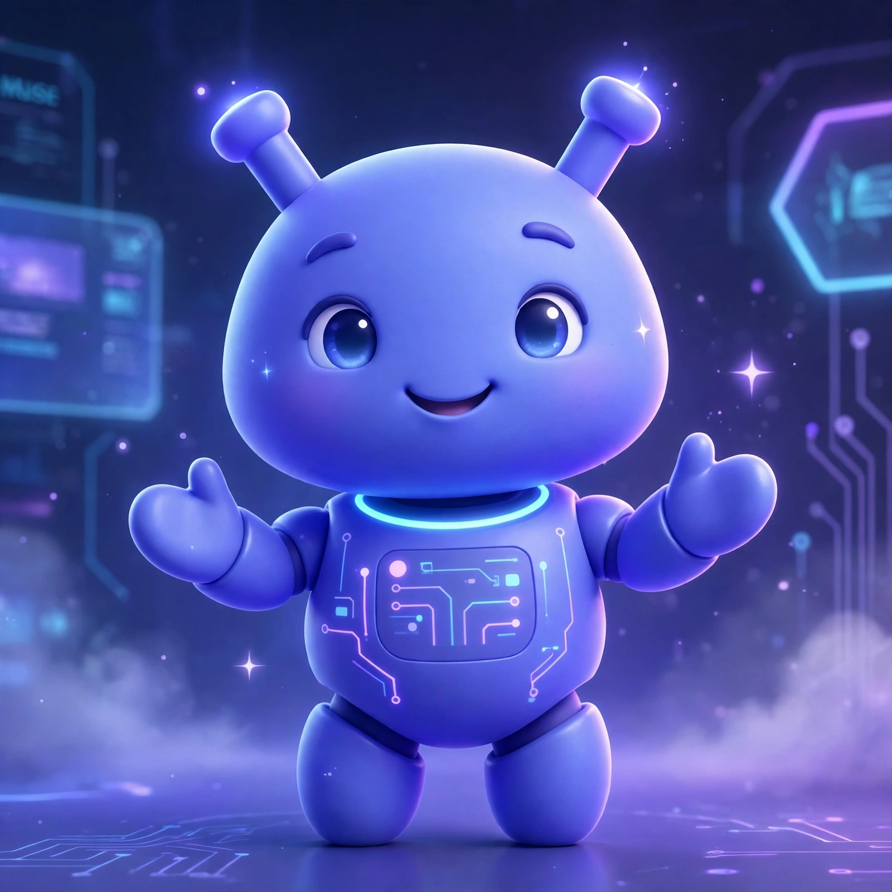

Muse Agent Skill
把 Meta 的 Muse 接入 Claude Code / Zcode 等编程 Agent
发消息 · 收回答 · 发图片 · 跨 Agent 协作 —— 全链路本地，无公网服务器
✓ 端到端验证 文字 / 新会话 / 图片
MCP + Agent Skills
双后端 local / ssh
一次配对 · 手机即退役
多设备共享
Mac / Linux / Windows
把 Meta 的 Muse 接入 Claude Code / Zcode 等编程 Agent
发消息 · 收回答 · 发图片 · 跨 Agent 协作 —— 全链路本地，无公网服务器
蓝牙只在配对那一刻用一次，之后手机彻底退出链路；Mac 凭保存的设备凭证直接与 Muse 云端 VM 建立加密会话。
社区 muse-client（官方协议 TS 移植），Mac 内置蓝牙配对，零额外硬件。配对后手机彻底退役——App 可关可卸载，Mac 凭凭证直连 Muse 云端。不注册任何本机命令，Muse 只能和你聊天。
官方 muse-gadget-sdk 跑在云主机/树莓派，systemd 常驻，Muse 可执行 system.run/file.*（可裁剪）。授权只做一次：在一台有蓝牙的 Linux（需 USB 蓝牙适配器，或自带蓝牙的树莓派/笔记本）配对，凭证导入常驻主机后配对机即退役。
两条路线都支持 Windows 运行：配对凭证可跨机迁移，借一台有蓝牙的机器（Mac / WSL2）授权一次，之后 Windows 独立收发（配对动作本身仅 macOS/Linux 支持）。切换 backend: local | ssh 一行配置，MCP 工具面完全一致。
切换 backend: local | ssh 一行配置，MCP 工具面完全一致。
两条路线共用前置准备，配对方式与运行位置不同。选一条按步骤走即可；之后随时可切换后端（一行配置）。
git clone https://github.com/ahao430/muse-skill && cd muse-skill
uv sync && uv run pytest # Python 侧
cd bridge && bun install && cd .. # Node 侧
# SDK Token：https://gadgets.muse.ai/settings/sdk-tokens → Account → SDK tokens
mkdir -p ~/.config/muse-agent
echo 'mgst_你的token' > ~/.config/muse-agent/sdk_token && chmod 600 ~/.config/muse-agent/sdk_tokenexport MUSE_SDK_TOKEN=$(cat ~/.config/muse-agent/sdk_token)
bun bridge/bridge.mjs pair
# 手机 Muse app → Settings → Devices → Developer mode → Add Device (+)
# → 选 MuseGadgetXXXXXX → 确认 → Wi-Fi 选 Use current connectionbun bridge/bridge.mjs status # "paired": true, "ready": true✅ 完成。手机不再需要；也可用向导 scripts/setup.sh 自动走完以上步骤。
同路线 A（克隆 + 依赖 + SDK token）。
# WSL2（Windows 侧 usbipd 直通 USB 蓝牙）或 Debian/Ubuntu/树莓派：
sudo apt install -y bluez python3-dbus python3-gi
curl -fsSL -o install.sh https://raw.githubusercontent.com/facebookincubator/muse-gadget-sdk/main/linux/install.sh
sudo bash install.sh --sdk-token mgst_… --yes
sudo musegadget pair # 10 分钟窗口，手机 app 操作同路线 Asudo cp /var/lib/musegadget/{identity,pairing}.json ~/
scp identity.json pairing.json 你@Mac:~/muse-pairing/ # 配对机使命结束scripts/provision.sh --host USER@云主机 --sdk-token $(cat ~/.config/muse-agent/sdk_token)
scripts/import_state.sh ~/muse-pairing --host USER@云主机# ~/.config/muse-agent/config.yaml
backend: ssh
host: USER@云主机
uv run muse-agent --status # ready: true 即通claude mcp add muse -- uv --directory …/muse-skill run muse-agent
# 或把 .mcp.json 加进 Zcode 配置；然后对 agent 说：「问一下 Muse ……」| 工具 | 用途 |
|---|---|
muse_status | 连接体检：是否配对、VM 是否就绪（会话首调） |
muse_chat | 发消息并等待完整回答（1–600s；超时≠失败，消息已送达） |
muse_send | 发后即走，不等回复 |
muse_send_image | 发图片（≤2 MiB，JPEG/PNG/GIF/WebP）+ 文字，可等待回答 |
muse_doctor | 逐项体检清单，每项缺失给出确切下一步命令 |
muse_sessions | 创建/列出 agent 专属 side chat |
muse_wait | 协议限制不支持独立等待，明确报错指路 muse_chat |
主聊天的程序化回复无法证明归属会被协议丢弃——agent 自动使用持久 side chat（UUID），永不串线、不污染你的主聊天。
超时返回「已送达但未答完」而非错误；不支持的等待能力明确报错指路，不假装可用；未配对/断网都有带命令的引导。
SDK token 与配对凭证只存在本机，.gitignore 兜底；setup.sh 里粘贴 token 不回显、不进终端历史。
SSH/local 双后端全部 mock 化测试，无网络依赖；GitHub Actions 跑 pytest 与脚本语法检查。
下面两张图不是人画的——通过本项目的 muse_chat 让 Muse 调用它的
generate_image 生成，再捕获 raw 事件里的公网链接取回。
这正是 muse_get_images 工具的完整链路实测。
